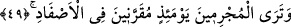
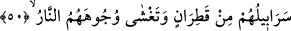

49. O gün, günahkârları birbirlerine yaklaştırılarak zincirlere vurulmuş görürsün.
Allah’ın huzûruna çıktıkları “o gün, günahkârları birbirlerine yaklaştırılarak
zincirlere vurulmuş görürsün.” Yâni günahkârlar bozuk inançlarda müşterek oldukları
gibi birbirlerine yaklaştırılarak zincirlerle bağlanırlar. Yahut kendilerini aldatan
şeytanlara yaklaştırılırlar. Ya da elleri ve ayakları zincirlerle boyunlarına
yaklaştırılarak bağlanırlar.
50. Onların gömlekleri katrandandır, yüzlerini de ateş bürümektedir.
Tefsirlerde şöyle denir: Katran, ardıç ağacından çıkartılıp pişirilen ve uyuz develerin
iyileştirildiği bir maddedir. Sertliği sâyesinde uyuzu yakıp yok eder. Bazen sıcaklığı tâ
karna kadar ulaşır. Pis kokulu simsiyah bir madde olup ateşin tutuşmasını hızlandırır.
Cehennemliklerin derisi onunla boyanır.
Katranın cehennemliklerin derisini kaplaması, gömlek vazifesi görmesi gibi
anlatılıyor. Çünkü bu durumda azâbın dört çeşidi de aynı anda meydana gelmiş oluyor.
Bu azaplar; katranın yakıp kavurması, ateşin derilerini yakmasını çabuklaştırması,
insanı dehşete sürükleyen bir renge sebebiyet vermesi ve leş gibi bir kokudur. Ayrıca
iki katran arasındaki farklılık iki ateş arasındaki farklılık gibidir. Çünkü bir hadiste
şöyle buyrulmuştur: “Sizin şu ateşiniz cehennem ateşinin yetmişte biri kadardır.”[41]
Siz katranı da buna kıyaslayın. Dünyâda, âhirette ve ikisi arasında Allah’ın bütün
azâbından yine kendisine sığınırız!
et-Tibyân’da der ki: Âhirette ki katran, cehennemliklerin bedenlerinden akan sıvıdır.
Kırâat imâmı Yakûb’un bu kelimeyi (min katri ân) şeklinde okuduğu rivâyet edilir.
Buna göre (katr) eritilmiş bakır ya da sarı mânâsında (ân) ise son derece sıcak
mânâsında olur.
“Yüzlerini de ateş kaplar” yâni katrana bulanmış derilerini yakmakta olan ateş
yüzlerini de sarıp daha yukarılara çıkar. Çünkü onlar yüzleri ile Hakk’a yönelmemiş ve
yüzlerinin arkasında bulunan ve düşünüp ibret almaları için yaratılmış olan şuûr ve
hislerini ibret yönünde kullanmamışlardır. Bu ateş ayrıca kalplerinin de tâ içlerine işler.
Çünkü kalpleri ma‘rifet bakımından boş olup tamâmen cehâletle doludur.
Bahru’l-ulûm’da şöyle denilir: “Yüz” kelimesi ile mecâzen bütün vücûd ve zât
anlatılır. Bu, hakîkî mânâsından daha beliğdir. Yâni, ateş onların bedenlerini sarıp
sarmalar. Çünkü hatâları da vücûdlarının her tarafından sâdır olmuştu. Dolayısıyla
hatâları nisbetinde, hattâ hatâda ısrâr ve devamları nisbetinde hatâlarının karşılığını
görürler.